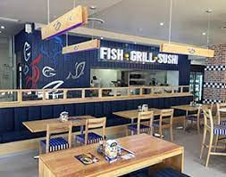
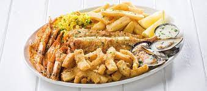

JOHN DORYS
n Dory, St Pierre or Peter's Fish, refers to fish of the genus Zeus, especially Zeus faber, of widespread distribution. It is an edible demersal coastal marine fish with a laterally compressed olive-yellow body which has a large dark spot, and long spines on the dorsal fin. The dark spot is used to flash an 'evil eye' if danger approaches. Its large eyes at the front of the head provide it with binocular vision and depth perception, which are important for predators. The John Dory's eye spot on the side of its body also confuses prey, which are scooped up in its big mouth. In New Zealand, Māori know it as kuparu, and on the East Coast of the North Island, they gave some to Captain James Cook on his first voyage to New Zealand in 1769. Several casks of them were pickled
- Prawns & Platters
- John's Platter R155........ 1 Hake fillet, calamari strips & 4 JD’s prawns.
- Captain's Platter R199........ 4 JD’s prawns, 1 petite hake fillet, calamari tubes & heads, & mussels served in a white wine, garlic & herb sauce.
- Two Sailors' Platter R295........ 2 Petite hake fillets, 10 JD’s prawns, calamari tubes & heads, & mussels served in a white wine, garlic & herb sauce.
- Meat Sharing Platter R389........ 400g Pork ribs, 10 JD’s prawns, 2 portions of calamari strips & a 1/4 chicken.
- Seafood Sharing Platter R399......... 10 JD’s prawns, 4 petite hake fillets, 2 portions of calamari tubes & heads with 2 portions of mussels in a white wine, garlic & herb sauce.
- Ten JD's Prawns R129......... Brushed in our famous JD's shellfish basting.
- 6 Queen Prawns R139 Brushed in our famous JD's shellfish basting.